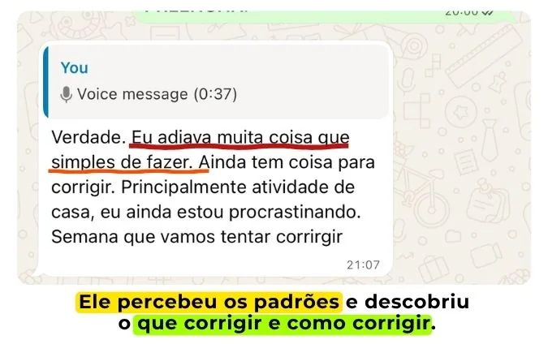
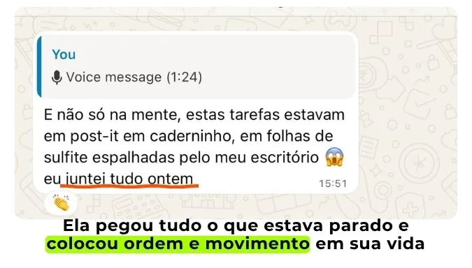
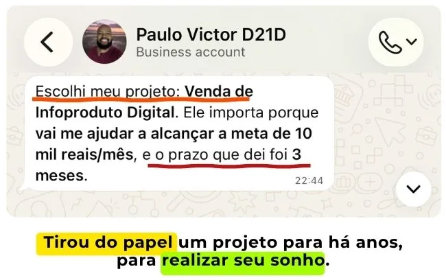
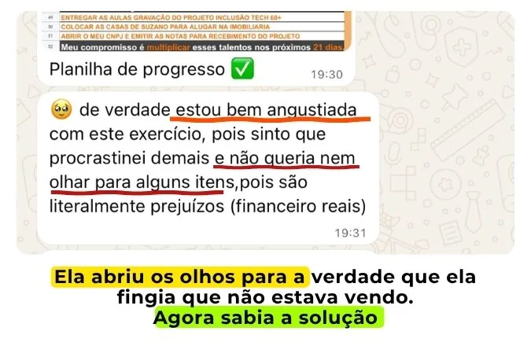
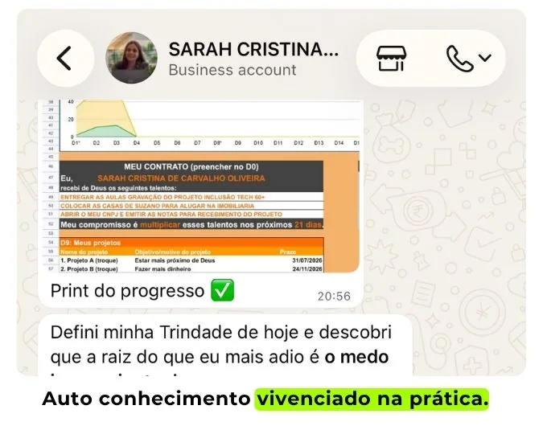
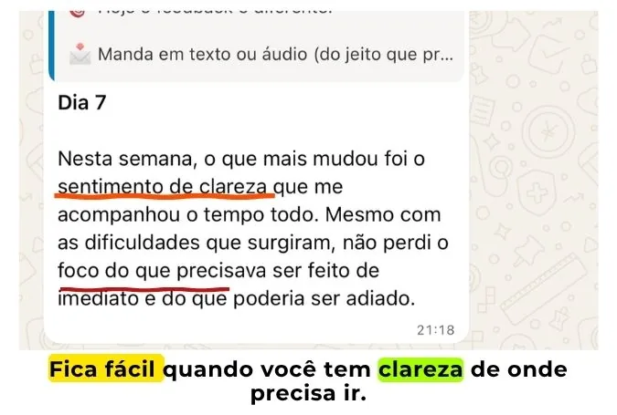
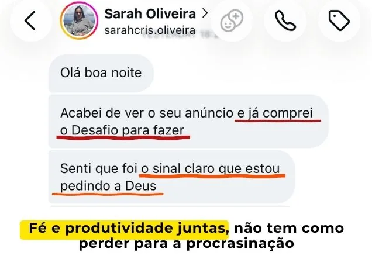
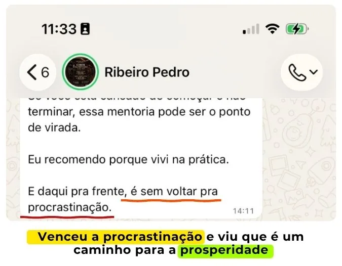
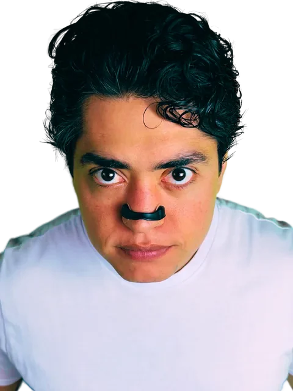

Desafio 7 Dias · O Talento Enterrado
Pra quem trabalha o dia todo e sente que não sai do lugar
Você adia esperando o dia abrir espaço pra fazer direito. Ele nunca abre. Em 7 dias, você tira tudo da cabeça e sabe o que fazer todo dia. Às 7h chega no seu WhatsApp 1 tarefa de 20 minutos, pequena o bastante pra fazer inteira.
De R$ 197 por R$ 67
Simulação: assim o desafio chega no seu WhatsApp.
Então esse desafio foi feito pra você.
Quero começar o desafio · R$ 67 →Talvez você se reconheça
Você já ouviu os rótulos: preguiça, bagunça, falta de foco. Olha de novo.
Parece preguiça.
Você chega em casa às 19h depois de resolver o problema de todo mundo, e o seu projeto fica pra amanhã de novo.
Parece desorganização.
Post-it na geladeira, lembrete no celular, 40 pendências na cabeça. Você guarda o que ninguém mais guarda.
Parece medo.
O projeto está pronto na sua cabeça há meses. Você só começa quando der pra fazer direito, e esse dia não chega.
Parece que você não termina nada.
Planner novo na segunda, abandonado na quarta. Você começou porque acredita. Parou porque o método dependia só da sua força.
Todos esses motivos são verdadeiros. E nenhum deles faz a sua lista andar sozinha.
Prova real
Prints enviados por alunos no WhatsApp.
O primeiro passo costuma ser esse:

Depoimentos de alunos do Método Remiyah, do qual este desafio é a porta de entrada. Resultados individuais podem variar conforme a dedicação.
Por que você trava
Quem resolve tudo passa o dia decidindo: o que responder, qual incêndio apagar primeiro, quem atender. Quando sobra um tempo pro que é seu, já não sobra decisão. E o que pede decisão fica pra amanhã. Você não precisa de mais disciplina. Precisa de menos decisões.
O motivo continua bom toda semana. Só que a segunda que vem chega igual a essa, e daqui a 1 ano são mais 52 segundas com o mesmo projeto na cabeça.
Cansaço não se resolve com mais esforço. Se resolve tirando decisão do seu caminho, uma tarefa pequena por dia.
Na Parábola dos Talentos, o servo que enterrou tinha um motivo: "atemorizado, escondi na terra o teu talento" (Mateus 25:25). Parecia prudência. O senhor não aceitou o motivo: "Mau e negligente servo" (Mateus 25:26). Motivo bom não desenterra nada.
Como funciona
A parte difícil, escolher por onde começar, já chega pronta no áudio. São 3 movimentos.
Tira tudo da cabeça e joga num lugar só, o Surrão. A mente esvazia, o peso sai.
Separa o que muda sua vida em 6 meses do que só grita urgente e dá hora marcada.
Mede com honestidade o que fez do que planejou. Acima de 50% já é vitória.
O que muda de verdade
Fazer a tarefa é o resultado técnico. O que você procura é o que vem depois dela.
Quem já passou por isso
Prints de quem fez o método, agrupados pelo que mudou.
Tirar tudo da cabeça


Encarar o que vinha adiando


Clareza que dura os 7 dias

Acompanhamento diário

Pra quem começa e não termina
O desafio acaba antes do dia em que você costuma desistir: 7 dias, 1 tarefa por dia, e no dia 7 você presta contas com número na mão.

O que chega no seu WhatsApp
7 Áudios Diários. Toda manhã, 1 áudio curto com a missão do dia e o porquê dela.
7 Tarefas Claras. 1 instrução por dia, executável em até 20 minutos. Você não precisa decidir por onde começar.
Planilha Progresso. Seu painel único. Preenche 2 números e vê em gráfico o quanto saiu da sua frente.
Acesso direto ao Ewertton. Travou? Me manda no WhatsApp. Você não fica parado sozinho.
Liberada no dia 7 pra quem mostra o resultado da semana.
Valor: R$ 109Pra quem enviou o resultado todos os dias, porque ninguém sai dessa sozinho.
Valor: R$ 297Risco zero
Se em 7 dias você achar que o Desafio não é pra você, por qualquer motivo, é só mandar mensagem. Devolvo 100% do valor. Sem formulário, sem pergunta, sem burocracia.
Você não perde nada testando. Perde se continuar adiando o que é seu.
A oferta
O preço sobe quando encerrar esse lançamento. Sem data certa. Quando fechar, fecha, assim como as portas que você não atravessou nos últimos anos.
Vendido separado, sai por R$ 1.647. Junto, o preço cheio é R$ 197.
ou 3x de R$ 23,85 no cartão
R$ 23,85 por parcela é menos do que uma pizza. E tira da sua cabeça o que está parado há meses.

Quem vai estar no seu WhatsApp todo dia
Procrastinei do ensino fundamental até os 38 anos. Trinta anos fazendo trabalho minutos antes do prazo, adiando o que importava, vivendo abaixo do potencial.
Ao mesmo tempo, passei mais de 20 anos em tecnologia. Comecei como analista, virei arquiteto de software, liderei equipe. Construía sistemas para empresas renderem mais, e a minha própria vida rodava no improviso.
Em fevereiro de 2024 minha filha nasceu. Eu fiz uma promessa diante de Deus: ela não vai me ouvir contar histórias do que eu poderia ter sido. Vai me ver vivendo o que fui chamado a fazer.
Larguei a CLT. Tentei algumas coisas no digital, com pouco resultado. Até entender que o que eu tinha de mais valioso estava na minha frente: saber usar tecnologia para fazer mais com menos.
Hoje uso IA para editar vídeo, responder cliente, organizar a semana. E mostro como, com câmera ligada.
Esse desafio é o que eu queria ter recebido lá atrás. É a porta de entrada do Método Remiyah: 7 dias, 20 minutos por dia, no seu WhatsApp, pra tirar tudo da cabeça e fazer o que importa.
"Faça mais com menos."
Ewertton Bravo
Dúvidas comuns
Agora é com você
A primeira tarefa chega às 7h no seu WhatsApp. São 20 minutos. O resto já vem decidido.
Pagamento seguro · Garantia 7 dias · Acesso imediato
Preencha seus dados para começar o desafio de 7 dias.